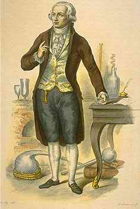

31 ANTOINE LAURENT LAVOISIER
1743-1794
Ilmuwan Perancis
hebat Antoine Laurent Lavoisier merupakan tokoh terkemuka di
bidang perkembangan ilmu kimia. Pada saat kelahirannya di
Paris tahun 1743, ilmu pengetahuan kimia ketinggalan jauh
ketimbang fisika, matematika dan astronomi. Sejumlah besar
penemuan yang berdiri sendiri-sendiri sudah banyak
diketemukan oleh para ahli ilmu kimia, tetapi tak satu pun
kerangka teori yang dapat jadi pegangan yang dapat merangkum
informasi yang terpisah-pisah. Pada saat itu tersebar
semacam kepercayaan yang tak meyakinkan bahwa air dan udara
merupakan substansi yang elementer. Lebih buruk lagi, adanya
kesalahfahaman mengenai hakekat daripada api. Kepercayaan
yang berkembang saat itu adalah bahwa semua proses
pembakaran benda mengandung substansi duga-dugaan yang
disebut "phlogiston," dan bahwa selama proses pembakaran,
substansi barang yang terbakar melepaskan phlogiston-nya ke
udara.
Dalam jangka waktu antara tahun 1754 - 1774, ahli-ahli
kimia berbakat seperti Joseph Black, Joseph Priestley, Henry
Cavendish dan lain-lainnya telah mengisolir arti penting gas
seperti oxygen, hydrogen, nitrogen dan carbon dioxide.
Tetapi, sejak orang-orang ini menerima teori phlogiston,
mereka tidak mau memahami hakikat atau arti penting
substansi kimiawi yang telah mereka ketemukan. Oxygen,
misalnya, dipandang sebagai udara yang semua phlogiston-nya
telah dialihkan. (Sebagaimana diketahui bahwa serpihan kayu
lebih sempurna terbakar dalam oxygen ketimbang dalam udara;
mungkin ini akibat udara lebih mudah menghisap phlogiston
dari kayu yang terbaru). Jelas, kemajuan nyata di bidang
kimia tidak bisa terjadi sebelum dasar-dasar utamanya dapat
difahami.
Adapun Lavoisier yang berhasil dan menangani
bagian-bagian yang menjadi teka-teki menjadi satu kesatuan
yang dapat dibenarkan dan menemukan arah yang tepat dalam
teori ilmu kimia. Pada tahap pertama, kata Lavoisier, teori
phlogiston sepenuhnya meleset: tidak ada benda yang namanya
phlogiston. Proses pembakaran terdiri dari kombinasi kimiawi
tentang terbakarnya barang dengan oxygen. Kedua, air
bukanlah barang elementer samasekali melainkan satu campuran
antara oxygen dan hydrogen. Udara bukanlah juga substansi
elementer melainkan terdiri terutama dari campuran dua jenis
gas, oxygen dan nitrogen. Semua pernyataan ini kini tampak
gamblang sekarang, tetapi belum bisa ditangkap baik oleh
pendahulu-pendahulu Lavoisier maupun rekan sejamannya.
Bahkan sesudah Lavoisier merumuskan teorinya dan mengajukan
kepada kalangan ilmuwan, toh masih banyak juga pemuka-pemuka
ahli kimia yang menolak gagasan teori ini. Tetapi, buku
Lavoisier yang brilian Pokok-pokok Dasar Kimia (1789),
begitu terang dan jernihnya mengedepankan hipotesa ini dan
begitu meyakinkan serta mengungguli pendapat-pendapat lain,
barulah ahli-ahli kimia angkatan lebih muda dengan cepat
mempercayainya.
Seraya membuktikan bahwa air dan udara bukanlah unsur
kimiawi, Lavoisier mencantumkan pula dalam bukunya daftar
substansi benda-benda itu yang dianggapnya punya arti
mendasar dan bersifat elementer meski daftarnya mengandung
beberapa kekeliruan, daftar unsur kimiawi modern sekarang
ini pada hakekatnya merupakan perluasan dari apa yang sudah
disusun Lavoiser itu.
Lavoiser sudah menyusun skema pertama yang tersusun rapi
tentang sistem kimiawi (bekerja sama dengan Berthollet,
Fourcroi dan Guyton de Morveau). Dalam sistem Lavoisier
(yang jadi dasar pegangan hingga sekarang) komposisi kimia
dilukiskan dengan namanya. Untuk pertama kalinya penerimaan
suatu sistem kimia yang seragam dijabarkan sehingga
memungkinkan para ahli kimia di seluruh dunia dapat saling
berhubungan satu sama lain dalam hal penemuan-penemuan
mereka.
Lavoisier merupakan orang pertama yang dengan gamblang
mengemukakan prinsip-prinsip penyimpanan jumlah reaksi benda
kimia tanpa bentuk tertentu: yakni reaksi dapat mengatur
kembali elemen yang benar dalam substansi semula tetapi tak
ada hal yang terhancurkan dan pada akhir hasil berada dalam
berat yang sama seperti komponen asal. Keyakinan Lovoisier
tentang pentingnya kecermatan menimbang bahan kimiawi
melibatkan reaksi yang mengubah ilmu kimia menjadi ilmu
eksakta dan sekaligus menyiapkan jalan bagi banyak
kemajuan-kemajuan di bidang kimia pada masa-masa
sesudahnya.
Lavoisier juga memberi sumbangan dalam bidang
penyelidikan geologi, dan menyumbangkan pula dalam bobot
yang meyakinkan di bidang fisiologi. Dengan percobaan yang
teramat hati-hati (bekerja sama dengan Laplace), dia mampu
menunjukkan bahwa proses fisiologi mengenai keringatan atau
bersimbah peluh adalah pada dasarnya sama dengan proses
pembakaran lambat. Dengan kata lain, manusia dan bangsa
binatang menimba energi mereka dari proses pembakaran
organik yang perlahan dari dalam, dengan penggunaan oxygen
dalam udara yang dihimpunnya. Penemuan ini saja --yang
mungkin arti pentingnya setara dengan penemuan Harvey
tentang peredaran darah-- sudah cukup mendudukkan Lavoisier
dalan daftar urutan buku ini. Tambahan pula, Lavoisier punya
makna amat penting berkat formulasinya tentang teori kimia
sebagai titik tolak tak tergoyahkan bagi sektor pengetahuan
kimia pada jalur yang tepat. Dia umumnya dianggap sebagai
"Pendiri ilmu kimia modern", dan memang dia patut mendapat
julukan itu.
"Daftar Periodik Unsur" modern yang dasarnya
merupakan perluasan dari daftar Lavoisier
Seperti halnya beberapa tokoh yang tercantum dalam daftar
urutan buku ini, Lavoisier justru belajar hukum di saat
remajanya. Meski dia dapat gelar sarjana hukum dan diangkat
dalam lingkungan ahli hukum namun tak sekali pun dia pernah
mempraktekkan ilmunya, walau memang ada dia berkecimpung
dalam dunia perkantoran administrasi Perancis dan pelayanan
urusan masyarakat. Tetapi yang terutama dia giat di dalam
Akademi Pengetahuan Kerajaan Perancis. Dia juga anggota
Ferme Generale, suatu organisasi yang berkecimpung dalam
dunia urusan pajak. Akibatnya, sesudah Revolusi Perancis
1789, pemerintahan revolusioner teramat mencurigainya.
Akhirnya dia ditangkap, berbarengan dengan dua puluh
tujuh anggota Ferme Generale. Pengadilan revolusi mungkin
tidak terlampau teliti, tetapi proses pemeriksaan berjalan
cepat. Pada suatu hari tanggal 8 Mei 1794 kedua puluh tujuh
orang itu diadili, dinyatakan bersalah dan dipenggal
kepalanya dengan guillotine. Lavoisier dapat hidup terus
dengan istrinya yang cerdas yang senantiasa membantunya
dalam kerja penyelidikan.
Pada saat pengadilan, ada permintaan agar kasus Lavoisier
dipisahkan, seraya mengedepankan sejumlah pengabdian yang
sudah dilakukannya untuk masyarakat dan ilmu pengetahuan.
Hakim menolak permintaan dengan komentar ringkas "Republik
tak butuh orang-orang genius." Ahli matematika besar
Langrange dengan ketus dan tepat membela temannya: "Memang
diperlukan waktu sekejap untuk memenggal sebuah kepala,
tetapi tak cukup waktu seratus tahun untuk menempatkan
kepala macam itu pada posisinya semula."
Situs Web
- http://www.chemheritage.org/EducationalServices/chemach/fore/all.html
|